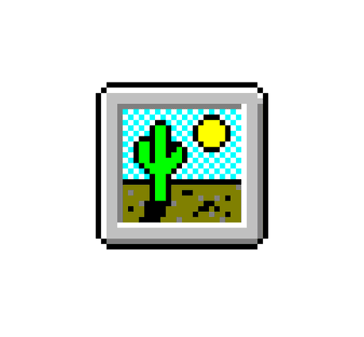
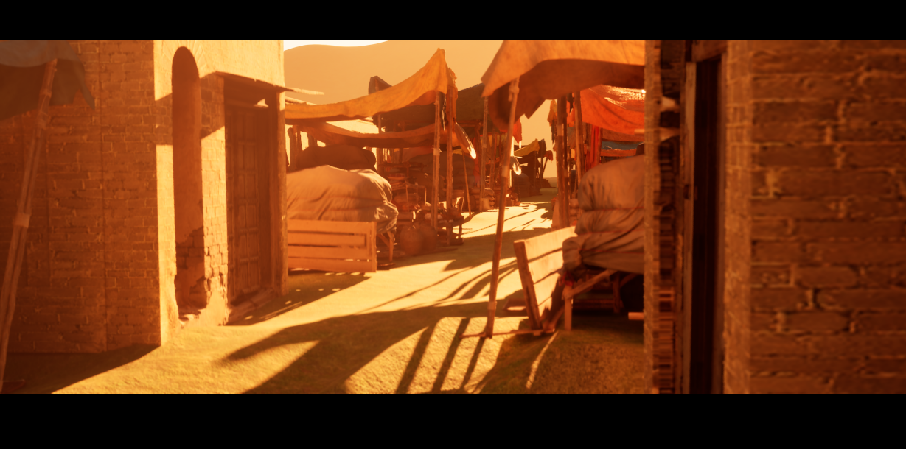
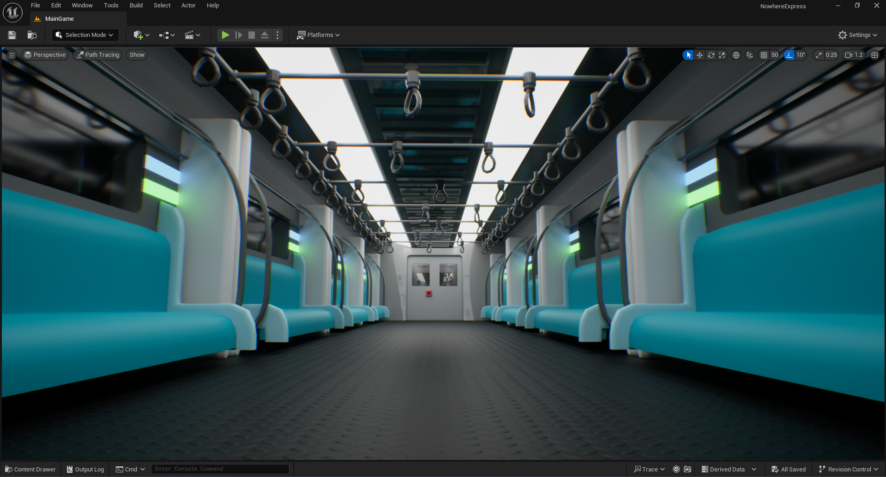
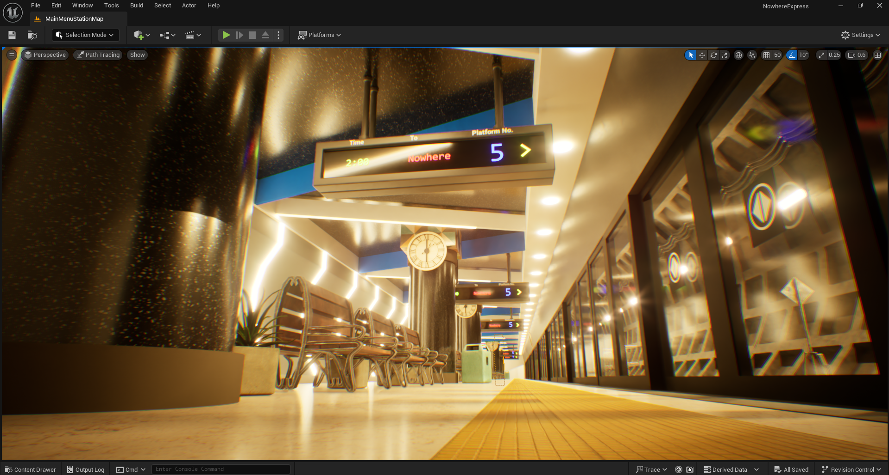
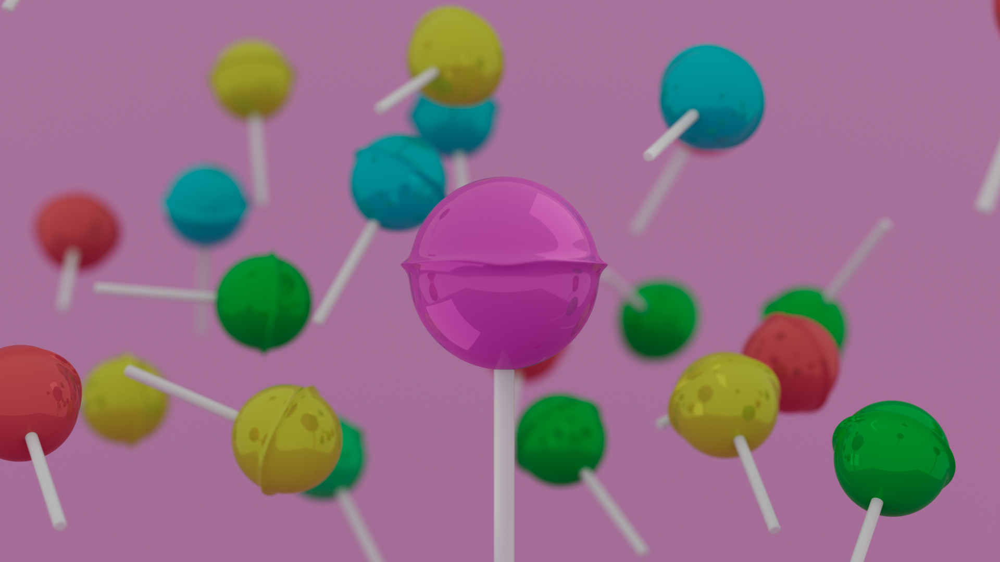

3D Art
This is my passion that goes on par with game development and filmaking. I have been working with Autodesk Maya since I was 12 and recently levelled up my skills in Unreal Engine 5. Check out some of my best works!

Bazar
This is a scene from my Minecraft villagers' dream cinematic showreel. Note that these individual models aren't mine, but I have arranged them for the scene along with the lighting and cinematic framing.

The Metro Train
This is an environment from my new UE5 horror game "Nowhere Express." This is the main playable area of the game. While I wont give out spoilers, the mood of the scene is intentional. The cinematic parallel lines and the lower camera angle along with large FOV angle sells that lone feeling. Note that ALL the models in this scene and the environment are made by me in Blender, Maya and UE5.

Metro Station
This is again, the part of my project from Nowhere Express. Essentially, this is the main menu environment. I had to give that "too perfect" feel too. The scene is full of blooms and over-exposed intentionally. Followed the critical "rule of thirds" for the cinematic composition with the parallel guide lines accross the scene. Note that only the benches, dustbin and foliage are outside models, rest everything is designed by me.

Lollipop
This was just a test for what I could do for CGI advertising. This is the raw version, the edited version with the graphical elements and color correction is here. I made the lollipop model. The key was to introduce a new strawberry flavour so everything else is in the background, out of focus. Made this in Maya, and used Arnold renderer. I think I failed to remove those reflections on the surface and kinda look like they are in studio. Anyways, I'm still proud how it turned out!